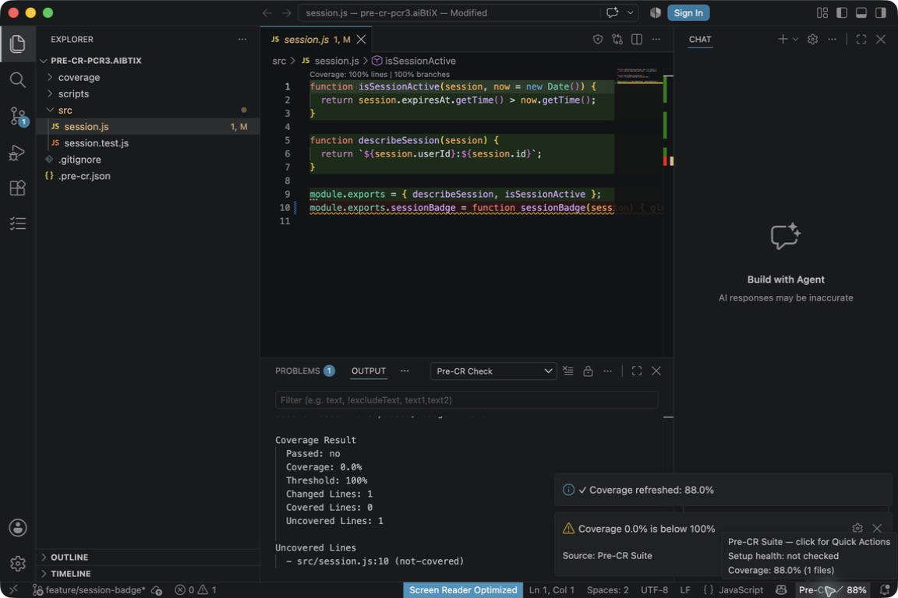
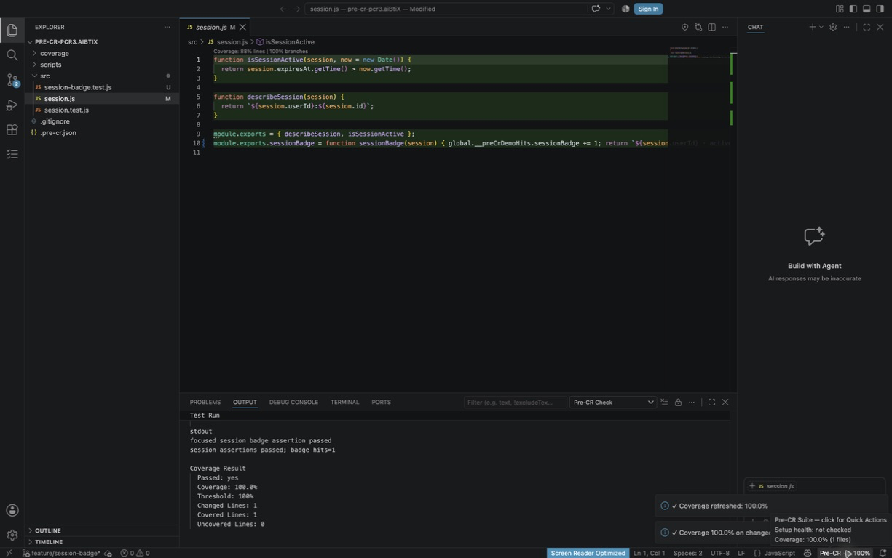

Return
Open the interrupted branch.
Recover interrupted branch context, take the next useful action inside the editor, and close the changed-line gap before review.
Open the interrupted branch.
Restore files and cursor with Where Was I?
Run the useful path from Quick Actions.
Add the focused test and rerun Pre-CR Check.

